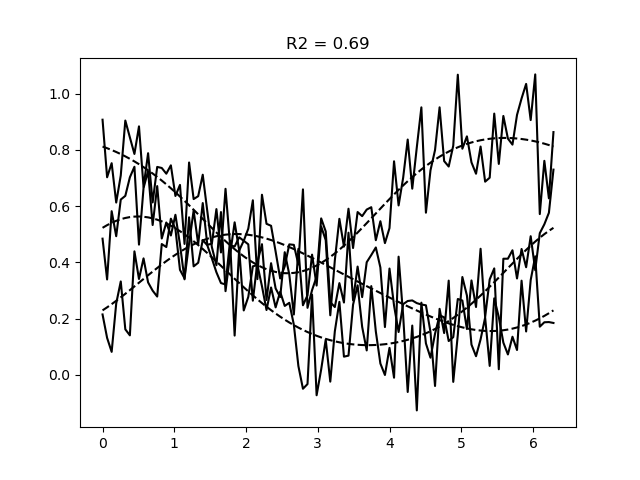

Lesson 2: Linear encoding models#
A linear encoding approach#
In the previous lesson, we saw how we can define (non-linear) encoding models and fit their parameter \(\theta\) to predict voxel responses \(x\) using non-linear descent.
It is important to point out that in most of the literature, the parameters \(\theta\) are asssumed to be fixed. In such work, researchers assume a limited set of \(m\) neural populations, each with their own set of parameters \(\theta\).
The responses in different \(n\) neural measures (e.g., fMRI voxels) are then to assume to be a linear combination of these fixed neural populations. How much each neural population contributes to each voxel is then defined by a weight matrix \(W\) of size \(m \times n\).
The big advantage of this approach is that it allows us fit the weight matrix \(W\) using linear regression. This is a much, much faster approach than fitting the parameters \(\theta\) using non-linear gradient descent.
In this lesson, we will see how we can use the EncodingModel class to fit
linear encoding models.
Setting up a linear encoding model in braincoder#
In braincoder, we can set up a linear encoding model by defining a fixed number of neural encoding populations, each with their own parameters set \(\theta_j\).
Here we use a Von Mises tuning curve to define the neural populations that are senstive to the orientation of a grating stimulus. Note that orientations are given in radians, so lie between -pi and pi.
Set up a von Mises model#
from braincoder.models import VonMisesPRF
import numpy as np
import pandas as pd
import matplotlib.pyplot as plt
# Set up six evenly spaced von Mises PRFs
centers = np.linspace(0.0, 2*np.pi, 6, endpoint=False)
parameters = pd.DataFrame({'mu':centers, 'kappa':1., 'amplitude':1.0, 'baseline':0.0},
index=pd.Index([f'Voxel {i+1}' for i in range(6)], name='voxel'))
# We have 3 voxels, each with a linear combination of the 6 von Mises functions:
weights = np.array([[1, 0, 1],
[1, .5, 1],
[0, 1, 0],
[0, .5, 0],
[0, 0, 1],
[0, 0, 1]]).astype(np.float32)
model = VonMisesPRF(parameters=parameters, weights=weights)
Once we have set up the model, we can first have a look at the predictions for the 6 different basis functions:
# Note that the function `basis_functions` returns a `tensorflow` `Tensor`,
# which has to be converted to a numpy array:
orientations = np.linspace(0, np.pi*2, 100)
basis_responses = model.basis_predictions(orientations, parameters).numpy()
_ = plt.plot(orientations, basis_responses)

Because the model also has a \(n{\times}m\) weight matrix (number of voxels x number of neural populations), we can also use the model to predict the responses of different voxels to the same orientation stimuli:
# Each voxel timeseries is a weighted sum of the six basis functions
pred = model.predict(paradigm=orientations)
_ = plt.plot(orientations, pred)

Fit a linear encoding model using (regularised) OLS#
To fit linear encoding models we can use the braincoder.optimize.WeightFitter.
This fits weights to the model using linear regression. Note that one can
also provide an alpha-parameter to the WeightFitter to regularize the
weights (pull them to 0; equivalent to putting a Gaussian prior on the weights).
This is often a very good idea in real data!
from braincoder.optimize import WeightFitter
from braincoder.utils import get_rsq
# Simulate data
data = model.simulate(paradigm=orientations, noise=0.1)
# Fit the weights
weight_fitter = WeightFitter(model, parameters, data, orientations)
estimated_weights = weight_fitter.fit(alpha=0.1).numpy()
# Get predictions for the fitted weights
pred = model.predict(paradigm=orientations, weights=estimated_weights)
r2 = get_rsq(data, pred)
# Plot the data and the predictions
plt.figure()
plt.plot(orientations, data, c='k')
plt.plot(orientations, pred.values, c='k', ls='--')
plt.title(f'R2 = {r2.mean():.2f}')

Note
The complete Python script and its output can be found here.
Summary#
In this lesson, we had a look at linear encoding models. These models
Assume a fixed number of neural populations, each with their own parameters \(\theta_j\)
Every voxel then is assumed to be a linear combination of these neural populations
The weights of this linear combination can be fit using linear regression
This is much faster than fitting the parameters \(\theta_j\) using non-linear gradient descent
In the next lesson, we will see how we can add a noise model to the encoding models, which yields a likelihood function which we can invert in a principled manner.